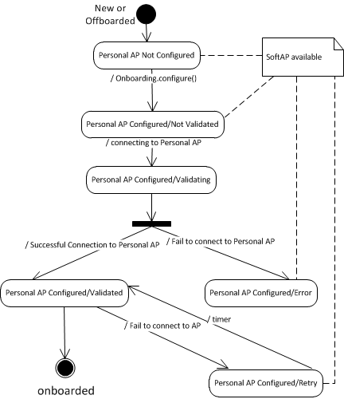

Onboarding API Guide - Java
Reference code
Onboarder application components
| Component | Description |
|---|---|
| AllJoyn™ Standard Library framework |
|
| Onboarding service framework package |
|
| SampleApps utility package | alljoyn_apps_android_utils.jar |
Reference Java application code
| Application | Description |
|---|---|
| OnboardingSDKSampleClient | A sample Android application that utilizes the Onboarding SDK to retrieve potential Onboardees and personal APs, and bring an Onboardee on the user's personal AP. |
Setting up the AllJoyn framework
The steps required for this service framework are universal to all applications that use the AllJoyn framework and for any application using one or more AllJoyn service frameworks. Complete the procedures in the following sections to guide you in this process:
Set up the Onboarding service framework
See the Building Android section for instructions on compiling the Onboarding SDK.
Build the Onboarder application
The following steps provides the high-level process to build an Onboarding application on top of the Onboarding SDK.
- Create the base for the AllJoyn application. See the [About API Guide][about-api-guide-android] for more information.
- Add the Onboarding service framework and SDK components to your project.
- Complete the tasks in Implementing the Onboarder Application. Review the code reference, or use the SDK sample client as a reference.
Implementing the Onboarder Application
Initialize the AllJoyn framework
See the [About API Guide][about-api-guide-android] for instructions to initialize the AllJoyn framework.
Connect to the AllJoyn bus
busAttachment = new BusAttachment(context.getPackageName(),
BusAttachment.RemoteMessage.Receive);
busAttachment.connect();
Set the AllJoyn router for thin library connections
Register the BroadcastReceiver object to receive a NETWORK_STATE_CHANGED_ACTION intent when the Android device connected to a selected AP.
private final static String DEFAULT_PINCODE = "000000";
/* this step only required if there are thin libraries version 14.02 */
Status pasStatus = PasswordManager.setCredentials("ALLJOYN_PIN_KEYX",
DEFAULT_PINCODE);
routerName = "org.alljoyn.BusNode.d" + busAttachment.getGlobalGUIDString();
int flag = BusAttachment.ALLJOYN_REQUESTNAME_FLAG_DO_NOT_QUEUE;
Status reqStatus = busAttachment.requestName(routerName, flag);
Initialize the AboutService in client mode
The About feature is used to receive Announcement signals. The AllJoyn device can start announcing itself once the Android device is connected to a SoftAP of the AllJoyn device. The Announcement signal provides the information required for starting the onboarding process.
For additional details, see the [About API Guide][about-api-guide-android].
// Initialize the About service in client mode
AboutService aboutService = AboutServiceImpl.getInstance();
aboutService.startAboutClient(busAttachment);
// Listen to AllJoyn device announcments
aboutService.addAnnouncementHandler(this, new
String[]{OnboardingTransport.INTERFACE_NAME});
Initialize the Onboarding Manager
Start OnboardingManager and pass it the application's context, the bus attachment, and the AboutService.
try {
OnboardingManager.getInstance().init(context, aboutService, busAttachment);
} catch (OnboardingIllegalArgumentException e) {
e.printStackTrace();
} catch (OnboardingIllegalStateException e) {
e.printStackTrace();
}
Perform a Wi-Fi scan
The Wi-Fi scan discovers all Wi-Fi networks in the vicinity of the Android device. The application can then filter out the potential personal APs and Onboardees.
// Register a broadcast receiver for Wi-Fi scans
BroadcastReceiver wifiReceiver = new BroadcastReceiver() {
@Override
public void onReceive(Context context, Intent intent) {
unregisterReceiver(this);
// filter the results
// All the access points that were found
// OnboardingManager.getInstance().getWifiScanResults(WifiFilter.ALL);
// Only the potential onboardees
// OnboardingManager.getInstance().getWifiScanResults(WifiFilter.ONBOARDABLE);
// Only the potential personal APs
OnboardingManager.getInstance().getWifiScanResults(WifiFilter.TARGET)
}
};
IntentFilter wifiFilter = new
IntentFilter(OnboardingManager.WIFI_SCAN_RESULTS_AVAILABLE_ACTION);
registerReceiver(wifiReceiver, wifiFilter);
registerReceiver(wifireceiver, wifiFilter);
// perform the scan
OnboardingManager.getInstance().scanWiFi();
Connect to the onboardee's SoftAP
Connect to the SoftAP of the device so that the AllJoyn device (onboardee) and the Android device (onboarder) are on the same network and can communicate via the AllJoyn framework.
Use the Android APIs to connect to the SoftAP. Refer to the Android documentation for more information.
(http://developer.android.com/reference/android/net/wifi/WifiManager.html)
(http://developer.android.com/reference/android/net/wifi/WifiConfiguration.html)
Onboard the onboardee to the personal AP
Create a broadcast receiver
Onboarding is performed asynchronously and the application is notified of its progress/errors by Android intents.
Register a broadcast receiver to receive onboarding progress notifications and errors.
BroadcastReceiver mainReceiver = new BroadcastReceiver() {
public void onReceive(Context context, Intent intent) {
if (intent.getAction().equals(OnboardingManager.STATE_CHANGE_ACTION)) {
// The Onboarding Manager reporting its progress.
// See the Onboarding SDK API doc for list of intent extras.
}
if (intent.getAction().equals(OnboardingManager.ERROR)) {
// The Onboarding Manager reporting an error.
// See the Onboarding SDK API doc for list of errors.
}
}
};
mainFilter = new IntentFilter();
mainFilter.addAction(OnboardingManager.STATE_CHANGE_ACTION);
mainFilter.addAction(OnboardingManager.ERROR);
registerReceiver(mainReceiver, mainFilter);
Prepare the Onboarding configuration
// Prepare the onboardee data
WiFiNetworkConfiguration onboardee = new WiFiNetworkConfiguration(onboardeeSsid,
onboardeeAuthType, onboardeePassword);
// Prepare the personal AP data
WiFiNetworkConfiguration target = new WiFiNetworkConfiguration(targetSsid,
targetAuthType, targetPassword);
// Create the OnboardingConfiguration object
OnboardingConfiguration config = new OnboardingConfiguration(onboardee,
onboardeeWifiTimeout, onboardeeAnnouncementTimeout, target,
targetWifiTimeout, targetAnnouncementTimeout);
Call runOnboarding()
try {
OnboardingManager.getInstance().runOnboarding(config);
} catch (OnboardingIllegalArgumentException e) {
} catch (OnboardingIllegalStateException e) {
} catch (WifiDisabledException e) {
}
Abort the onboarding process
The onboarding process can take some time, resulting in possible connection timeouts. The SDK has an API to enable the application to abort the process and return to idle state.
NOTE: Aborting is not possible once the personal AP credentials have been passed to the onboardee.
try {
OnboardingManager.getInstance().abortOnboarding();
} catch (OnboardingIllegalStateException e) {
}
Use the broadcast receiver to monitor the aborting process.
Remove an AllJoyn device from the personal AP
Create a broadcast receiver
Like with onboarding, offboarding is performed asynchronously and the application is notified of its progress/errors by Android intents.
Register a broadcast receiver offboarding progress notifications and errors :
BroadcastReceiver mainReceiver = new BroadcastReceiver() {
public void onReceive(Context context, Intent intent) {
if (intent.getAction().equals(OnboardingManager.STATE_CHANGE_ACTION)) {
// The Onboarding Manager reporting its progress.
// See the Onboarding SDK API doc for list of intent extras.
}
if (intent.getAction().equals(OnboardingManager.ERROR)) {
// The Onboarding Manager reporting an error.
// See the Onboarding SDK API doc for list of errors.
}
}
};
mainFilter = new IntentFilter();
mainFilter.addAction(OnboardingManager.STATE_CHANGE_ACTION);
mainFilter.addAction(OnboardingManager.ERROR);
registerReceiver(mainReceiver, mainFilter);
Prepare the Offboarding configuration
// Prepare the AJ configuration of the AJ device to be offboarded
OffboardingConfiguration config =
new OffboardingConfiguration(busName,port);
Call runOffboarding()
try {
OnboardingManager.getInstance().runOffboarding(config);
} catch (OnboardingIllegalArgumentException e) {
} catch (OnboardingIllegalStateException e) {
} catch (WifiDisabledException e) {
}
Shutdown
Once you are done usingthe Onboarding SDK, free the variables used in the application.
try {
OnboardingManager.getInstance().shutDown();
} catch (OnboardingIllegalStateException e) {
try { OnboardingManager.getInstance().abortOnboarding();
OnboardingManager.getInstance().shutDown();
} catch (OnboardingIllegalStateException e1) {
}
}
AllJoyn Device State Machine
The following figure illustrates the AllJoyn device state during the onboarding process.

Figure: Onboarding state diagram
Onboarding process connection points
| Field name | Required |
|---|---|
| SoftAP availability | SoftAP is available when the device is in any of the following states:
|
| Automatic connection to validated personal | At startup time, the device will automatically connect to the personal AP if is configured and validated. |
| AP Failed connection attempts with personal AP | If the device is in personal AP Configured/Validated state but the device fails to connect after a configurable number of delayed attempts, it will move to state Personal AP Configured/Retry. In this state, the SoftAP is enabled to allow the device to be reconfigured. After a timer expires, the device goes back to the Personal AP Configured/Validated and it will try to connect to the Personal AP again. |
Best Practices
Onboarder application
Filter the APs to show just what can be onboarded
When developing an Onboarder application for Android, use the Onboarding Manager APIs to perform a Wi-Fi scan and then automatically filter the results into Onboardees and potential APs. The UI should only present the Onboardees when allowing the user to select what to onboard.
On other platforms, when building an Onboarder application, it is recommended to use the native platform APIs to list out the nearby Wi-Fi APs. Doing this in a crowded Wi-Fi environment with many APs presents a challenge for the end user to scroll through a long list and identify the device to be onboarded.
It is recommended to have the device use "AJ_" as a prefix for the SSID. As such, the Onboarder application can assume, based on the SSID, that a device can support the Onboarding service framework. The UI for the Onboarder application should present the devices that started with "AJ_" at the top of the list of nearby devices that can be onboarded.
Use the Wi-Fi scan list from the device running the Onboarder application
When developing an Onboarder application for Android, use the Onboarding Manager APIs to perform a Wi-Fi scan and then automatically filter the results into Onboardees and potential APs. The UI should only present the Onboardees when allowing the user to select what to onboard.
On other platforms, upon successfully joining and validating that a device supports the Onboarding service framework, a platform request should be made to get a list of the nearby APs. The application should filter out any SSIDs that start with "AJ_", as these should be Onboardee devices a user's personal AP. The UI will present the option to select an AP to preconfigure the SSID and if security on the AP is enabled show an input for a password/passphrase.
Use the Wi-Fi scan list from the Onboardee device
Once the Wi-Fi list is generated per Use the Wi-Fi scan list from the device running the Onboarder application, use the Onboarding service framework API to request the list of APs that the Onboardee device can detect. This will ensure that the consumer selected/entered AP is detected by both devices, and that signal strength is sufficient to facilitate a connection.
If the application provides a completely different list than what the Onboardee device detects, it is recommended to alert the user upon entering/selecting an AP that the device being onboarded could potentially be out of range of entered/selected AP. If the Onboardee application receives an error, show a pop-up with a suggestion to move the device or AP closer. It should then continue to send the credentials to the device and wait for the appropriate response/error messages.